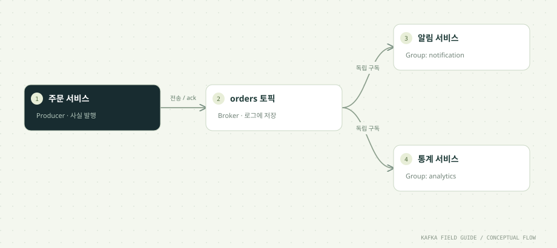

이 단원을 마치면
- 요청·응답과 이벤트 전달을 구분한다
- Producer → Broker → Consumer의 책임을 설명한다
- 토픽을 만들고 저장된 메시지를 읽는다
01 / UNDERSTAND먼저, 원리를 이해합니다.
이벤트는 이미 일어난 사실입니다
“이 주문을 처리해 주세요”라는 명령과 “주문이 생성되었습니다”라는 이벤트는 의도가 다릅니다. 여기서는 주문 생성 사실을 eventId, orderId, amount, occurredAt으로 표현합니다. 이벤트를 받은 서비스는 자기 업무에 맞게 반응합니다.
Kafka는 이벤트를 저장하고 전달합니다
Producer가 레코드를 브로커에 기록하면 Consumer는 필요한 위치부터 읽습니다. Producer는 모든 Consumer의 주소를 알 필요가 없습니다. Consumer가 중단되어도 보관 기간 안의 기록을 나중에 다시 읽을 수 있습니다.
비동기 처리는 성공의 시점을 나눕니다
Kafka 전송 성공은 주문 알림 전송 성공과 다릅니다. 브로커가 기록을 확인했다는 의미와, Consumer가 업무 처리를 끝냈다는 의미를 분리해서 관찰해야 합니다. 후속 처리 지연과 실패를 다룰 설계도 필요합니다.
언제 도입할까요?
독립된 여러 구독자, 이벤트 재처리, 많은 이벤트의 지속적 처리가 필요할 때 검토합니다. 단순 CRUD 서비스에 새로운 운영 부담을 더할 이유는 적을 수 있습니다. 이벤트의 필요성부터 설명할 수 있어야 합니다.
02 / FOLLOW THE EVENT데이터의 이동을 따라갑니다.


원리를 이해하기 위한 단계 모델입니다. 네트워크 시간이나 장애 판정을 재현하지 않습니다.
03 / READ THE CODE현업 패턴을 코드로 읽습니다.
아래 코드는 함께 제공된 실행 소스에서 발췌했습니다. 전체 클래스와 설정은 소스 파일에서 확인할 수 있습니다.
for (String name : List.of("orders", "orders.retry", "orders.dlt", "orders.tx", "orders.counts")) {
if (!existing.contains(name)) {
topics.add(new NewTopic(name, 3, rf).configs(Map.of(
"min.insync.replicas", rf == 1 ? "1" : "2",
"retention.ms", "604800000")));
}
}
if (!topics.isEmpty()) admin.createTopics(topics).all().get();소스: 초급/src/main/java/study/kafka/TopicAdmin.java · 15행부터
- NewTopic(name, 3, rf)는 토픽당 파티션 3개와 복제 수를 명시합니다. 토픽 생성을 자동화에 맡기되 설정을 눈으로 확인합니다.
- 토픽 보관 기간은 7일입니다. 이 예제는 학습용이며 운영 보관 기간은 재처리 요구와 저장 공간으로 결정합니다.
- auto.create.topics.enable=false이므로 오타 난 토픽에 조용히 쓰는 것을 막고 init 단계에서 명시적으로 생성합니다.
04 / MAKE IT REAL이제, 직접 확인합니다.
PowerShell에서 저장소 루트로 이동한 뒤 실행하세요. 01단원의 up → build → init이 선행되어야 합니다. 종료된 환경은 up으로 다시 시작합니다. 이후 단원의 max=0은 입력이 끊긴 뒤 25초까지 읽습니다. 대응 실습 안내 파일 ↗
01. 환경 시작
.\실습\study.ps1 upKafka와 PostgreSQL이 healthy가 됩니다. 첫 실행은 이미지 다운로드 시간이 필요합니다.
02. 코드 빌드
.\실습\study.ps1 build실습/target/kafka-labs.jar가 생성됩니다.
03. 토픽 생성
.\실습\study.ps1 initorders 등 5개 토픽과 각 파티션의 Leader/Replicas/ISR가 출력됩니다.
04. 첫 이벤트
.\실습\study.ps1 run producer 3 orders day01SENT 3줄이 출력됩니다.
05. 읽기
.\실습\study.ps1 run consumer day01-reader 3 ordersRECEIVED 3줄과 CONSUMED 3이 출력됩니다.
한 걸음 더 실험하기
- 새 그룹 day01-other로 같은 3건을 다시 읽어 보세요. 읽었다고 레코드가 삭제되지는 않습니다.
- 동일한 그룹으로 재실행하면 커밋한 위치에서 이어 읽습니다. 새 메시지가 없으면 25초 뒤 종료합니다.
05 / CHECK YOUR UNDERSTANDING설명할 수 있으면, 내 지식입니다.
Producer가 전송 성공 응답을 받았습니다. 확실히 말할 수 있는 것은?
원리를 읽고 실습 결과를 확인했나요?
학습 기록은 이 브라우저에만 저장됩니다.